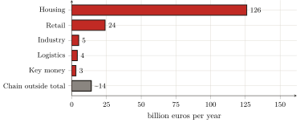

— AI translation — Claude Fable 5 (Anthropic)
Part Three — The empirical measurement of capture · Chapter 11
11 The general law and its quantification
The two preceding chapters measured, each for its own domain, what parts I and II had named without yet quantifying it. It remains to make the sum, and above all to state the law it reveals, for a number, however large, is worth only the mechanism it brings to light. This chapter closes the empirical part by adding the two measures together, formulating the law they reveal and naming what this book leaves to others.
11.1 The sum: about 162 billion euros a year
The account is quickly settled, for it has only two terms. Residential rent (the tribute the inhabitant pays in his rent, actual or imputed) amounts to 126 billion euros a year (chapter 9). Business rent (the one the shopkeeper, the industrialist, the logistics operator pay on their walls and pour back into their prices, down to the consumer) adds on the order of 36 billion (chapter 10). In total, the land tribute levied in France on access to built space approaches 162 billion euros a year (figure).

Let us relate this number to familiar magnitudes. It is nearly 6 % of gross domestic product; it is, per tax household, on the order of 329 euros a month (256 for housing, 73 passed on in prices), i.e. more than two months’ net minimum wage captured every year; it is, finally, nearly twice the yield of the income tax.1 That a sum comparable to the income tax should be levied, outside any vote and without productive counterpart, on the mere fact of occupying a place.
We shall give it for what it is, without hardening it. The housing term is solid: it derives from the SDES aggregates (chapter 9); the business term is more fragile, for the building stock is poorly known, but it was taken low, and it is more plausibly a floor than a ceiling (chapter 10). Alongside, we have named and gauged another extraction (the stacked margins of the chain that produces the built stock, some fifteen billion of “pure” profit), but we have kept it out of the account, because it burdens reproducible goods, not access to a land that is not reproducible. The land tribute, for its part, does stand at about 162 billion: an order of magnitude, understated if anything, whose robustness matters less than what it designates.
11.2 The general law
For beneath the diversity of forms, the mechanism is one. The dwelling’s rent, the owner-occupier’s imputed rent, the commercial lease, key money, the interest the buyer pays on the capitalised price of his land — and, in the fields, the peasant’s farm rent — are but the masks of one and the same operation: the capture, by the holder of a title over a portion of space, of a monopoly income on access to that portion, without productive counterpart. Land does not produce, it conditions (chapter 1); rent is the toll on that conditioning (chapters 1 and 3); with capitalism, it has taken its accomplished form — transferable, maximisable, capitalisable (chapters 3 and 4); it founds a class division, the user and the rentier (chapter 5); the categories conceal it (chapters 6 and 7), the theories justify it (chapter 8); and measurement, finally, confirms its mass (chapters 9 and 10). The law is not deduced from a principle: it is the invariant that remains when all the particular forms have been removed, one by one.
This invariant is nothing new; it is only, today, at its height. The tribute on access to land is as old as the sedentary city: we saw it born at Uruk, where the temple and then the palace allocated the land and levied on its use (chapter 2). What has changed is not the existence of the levy, but its form. The conditional and inalienable tenure of the temple-city, the customary and non-maximisable dues of the fief, have given way to the absolute property of the Civil Code — “the right to enjoy and dispose of things in the most absolute manner” — which makes the title transferable and the rent maximisable. The price did not invent the tribute: it universalised it and carried it to its maximum, by making access to land a commodity like any other. The 162 billion measured are the contemporary, capitalist face of the oldest political problem of sedentary societies: how to allocate space made scarce by numbers?
11.3 Opening: the peasant question
This law finds its most accomplished form not in the city, but in the fields — and it is by this that the book points to what it leaves to others. The peasant is caught in the tribute of space more completely than anyone else, because he combines its two faces. Upstream, the stranglehold: agricultural land first (farm rent is the rural form of the same toll), but also the lock on seeds, credit, machinery, energy, those conditions of production that oligopolies hold. Downstream, the capture: the processors and mass retail, who hold access to the market and set the prices. Between the two, under the constraint of free trade with spaces of lower social and ecological standards, the producer’s margin is squeezed to the bone.
One will recognise, in this upstream and this downstream, the distinction that chapter 10 maintained: farm rent is rent on space in the strict sense; the stranglehold of seeds or retail is the neighbouring, oligopolistic extraction that burdens the conditions of production without being, strictly speaking, ground rent. Measuring the one and the other, with the same discipline, will fall to others. That measurement would show above all why the peasant realises the law at its highest point: because he is, himself, at once the user and the producer, doubly caught — paying to access the land he works, and stripped of what he draws from it.
This is the meaning of the two articles from which this work originated2: this book has measured the tribute on the inhabitant and the worker; the tribute on the peasant remains to be measured. Both lead to the same question, which the measurement only makes inescapable. We now know how much is levied on access to space, and that this levy has no productive counterpart. The question then ceases to be one of accounting and becomes political: no longer “how much?”, but “must it be so?”. That is the object of the last part.
Taking stock
Part III has drawn up the inventory the first two parts had prepared. It establishes that in France, access to built space is burdened with a tribute of about 162 billion euros a year (the rent of housing and that of business combined), levied without productive counterpart, and more plausibly understated than overstated. It shows that, beneath the diversity of rents, leases and interest, this tribute obeys a single law: the capture of a monopoly income on access to land, the accomplished capitalist form of a levy as old as the city. And it leaves, deliberately, out of its account what does not belong to it: the margins of the productive chain, a neighbouring but distinct extraction. It remains to draw from this finding its consequence: if the tribute is only one historical form among others of the allocation of land, then another allocation is possible. That is what part IV undertakes to think.
GDP 2023: €2 803 billion. Tax households: 41 million (DGFiP). Net monthly minimum wage (SMIC) 2026: ≈ €1 443. Income tax: ≈ €92 billion/yr. The detail and the sources of each line are in chapters 9 and 10.↩︎
“Erst Essen, dann Miete” ((Portalez 2024a)) provides the matrix of the last part of this book — housing to the inhabitant; “Paysans et capitalisme” ((Portalez 2024b)) poses the peasant question — the land to those who work it.↩︎